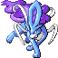
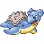
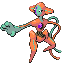

Legendary Pokémon
How to get every legendary Pokémon: what has to be done first, which item you need and where the Pokémon then waits.
Rules for all legendary Pokémon
- Caught: there is no second one.
- Knocked out: it comes back after your next victory over a Pokémon League – in any region.
- Fled (you or the Pokémon): it is back after 3 day changes.
- If you lose the battle, nothing changes.
- Roaming Pokémon simply keep roaming until you catch them. After every League victory they set off again if they are no longer on the move.
- Whether a Pokémon is there is decided when you enter the map. Leave and come back if something should have changed.
- The same rules apply to Lapras in Union Cave and the red Gyarados at the Lake of Rage.
Kanto
Articuno
- Place
- Seafoam Islands
- Level
- Lv. 40
- No condition: the Pokémon waits there as soon as you reach the place.

Zapdos
- Place
- Power Plant
- Level
- Lv. 40
- No condition: the Pokémon waits there as soon as you reach the place.

Moltres
- Place
- Victory Road
- Level
- Lv. 40
- No condition: the Pokémon waits there as soon as you reach the place.

Mewtwo
- Place
- Cerulean Cave
- Level
- Lv. 50
- Become Champion of Kanto. After that the guard clears the entrance of Cerulean Cave.
- Mewtwo waits in the basement of the cave.

Mew

Jirachi
- Place
- Route 4
- Level
- Lv. 80
- Travel to Hoenn once. You need the Hoenn Ticket for that: you receive it after your first Johto title in Professor Oak's lab in Pallet Town.
- Go to the white rock on Route 4 at night (7 p.m. to 6 a.m.) and touch it.
- Jirachi appears next to the rock. Talk to it.
Johto
Lugia or Ho-Oh: the choice on Route 39
On Route 39 a shadow flies over you and a man asks: “Gold” or “Silver”? “Gold” makes Ho-Oh the Pokémon of your story, “Silver” makes it Lugia. The choice cannot be changed.
You meet the chosen Pokémon in the story at Lv. 78. The other one comes later at Lv. 80 – both can be caught in every save file.
Silver Wing and Rainbow Wing: you receive one of them in the Radio Tower of Goldenrod City. You do not need them for the encounters – what counts are the bells of the Kimono Girls.
The Kimono Girls at the Dance Theater
- Finish the trial in the Dragon's Den. When you enter Blackthorn City afterwards, Professor Elm calls.
- Talk to Professor Elm in his lab in New Bark Town. He gives you a Master Ball and sends you to the Kimono Girls.
- Go to Ecruteak City. You meet your rival in front of the Dance Theater; then enter the theater and talk to Zuki.
- Defeat the five Kimono Girls one right after the other.
- As a reward you receive the Tidal Bell (if you chose Lugia) or the Clear Bell (for Ho-Oh).
Lugia
- Place
- Whirl Islands
- Level
- Lv. 78 / Lv. 80
If you chose Lugia
- Defeat the Kimono Girls and receive the Tidal Bell. The four Tentacruel on Route 41 that block the way disappear.
- Go to the deepest chamber of the Whirl Islands. The Kimono Girls dance and Lugia appears at Lv. 78.
If you chose Ho-Oh
- Catch Ho-Oh – knocking it out is not enough.
- Become Champion of Johto.
- Enter Route 41: the Tentacruel are gone now. Lugia waits in the deepest chamber of the Whirl Islands at Lv. 80.
Ho-Oh
- Place
- Tin Tower
- Level
- Lv. 78 / Lv. 80
If you chose Ho-Oh
- Defeat the Kimono Girls and receive the Clear Bell.
- Show the bell to the sage in the house in front of the Tin Tower in Ecruteak City. He clears the way.
- Climb to the roof of the Tin Tower. The Kimono Girls dance and Ho-Oh appears at Lv. 78.
If you chose Lugia
- Catch Lugia – knocking it out is not enough.
- Become Champion of Johto.
- The sage also lets you into the Tin Tower with the Tidal Bell. Ho-Oh waits on the roof at Lv. 80.

Suicune
- Place
- Tin Tower
- Level
- Lv. 78
- Enter the Burned Tower in Ecruteak City. After the battle against your rival you fall into the basement; the three legendary beasts run away there.
- Travel on to Olivine City and then to Cianwood City. There you see Suicune and battle Eusine.
- Meet Suicune by the water on Route 42.
- Then go to the spot on Route 36 where Sudowoodo stood. Suicune runs off to the north and Eusine sends you to the Tin Tower.
- Defeat the Kimono Girls: with their bell the sage lets you into the Tin Tower.
- Suicune waits on the ground floor of the Tin Tower.

Raikou
- Level
- Lv. 75
- Enter the Burned Tower in Ecruteak City. After the battle against your rival you fall into the basement; the three run away there.
- From now on Raikou and Entei roam the routes of Johto and keep changing routes. You meet them by chance in tall grass.

Celebi
- Place
- Ilex Forest
- Level
- Lv. 75
- Solve the sliding puzzle with the picture of Ho-Oh in the Ruins of Alph. You fall one floor down; an item ball with the GS Ball now lies there.
- Take the GS Ball to Kurt in Azalea Town and talk to him. He keeps the ball.
- Leave his house. Kurt follows you and gives the GS Ball back.
- Go to the shrine in Ilex Forest and place the ball inside. Celebi appears.

Gyarados
- Place
- Lake of Rage
- Level
- Lv. 55
- The red Gyarados swims in the middle of the Lake of Rage. The first battle is part of the story: afterwards you receive the Red Scale, however it ends.

Lapras
- Place
- Union Cave
- Level
- Lv. 55
- No condition and no particular weekday: Lapras swims on the lowest floor of Union Cave.

Hoenn
Regirock, Regice and Registeel
- Level
- Lv. 100
- Go to the Sealed Chamber and use Dig in the first room in front of the inscription on the back wall. A passage opens.
- Put Wailord first and Relicanth last in your party and read the inscription in the back room. The entrances of the three caves open.
- Regirock – Desert Ruins on Route 111: read the inscription and use Rock Smash at the spot it describes.
- Regice – Island Cave on Route 105: read the inscription, then walk one full lap around the cave along the wall.
- Registeel – Ancient Tomb on Route 120: read the inscription and use Flash at the spot it describes.


Kyogre and Groudon
- Level
- Lv. 100
- Become Champion of Hoenn.
- Talk to the scientist upstairs in the Weather Institute on Route 119. He names a route with unusual weather.
- Heavy rain: Kyogre waits in a cave under water. Look for the dive spot on the named route and dive there.
- Drought: Groudon waits in a cave on land. Look for the new cave entrance on the named route.

Rayquaza
- Place
- Sky Pillar
- Level
- Lv. 100
- Play the Hoenn story until Wallace opens the Sky Pillar for you, and wake Rayquaza at the top.
- Watch Rayquaza end the battle in Sootopolis City.
- Then climb to the top of the Sky Pillar again. Rayquaza waits there.

Latias and Latios
Deoxys
- Place
- Birth Island
- Level
- Lv. 80
- Catch every Pokémon of the Hoenn Pokédex. Which ones count is listed under Completing the Pokédex.
- Talk to Professor Oak in his lab in Pallet Town. He gives you the Aurora Ticket.
- With the ticket in your Bag the ships offer Birth Island as a destination – at the harbors of Olivine City and Vermilion City (from the Johto title) and of Slateport City and Lilycove City (from the Hoenn title).
- Solve the triangle puzzle on the island. Deoxys appears.

Other fixed encounters
These Pokémon stand in the world as an obstacle or a trap. The rules above do not apply to them.
| Pokémon | Place | Level | How the battle starts |
|---|---|---|---|
| Route 12, Route 16 | Lv. 30 / Lv. 35 | You need the Poké Flute from Mr. Fuji in Lavender Town; he is there after you free him in the Pokémon Tower. Each Snorlax exists only once: knocked out or fled, it is gone. | |
| Pokémon Tower | Lv. 30 | The ghost in the Pokémon Tower. Without the Silph Scope you cannot fight it; you find it in the Rocket Hideout. | |
| Power Plant | Lv. 35 | Looks like an item ball. Each exists only once. | |
| Route 36 | Lv. 50 | Water the tree with the SquirtBottle. You get it at the flower shop in Goldenrod City with three Johto badges. If you flee, it stays; knocked out, it is gone. | |
| Route 41 | Lv. 100 | They block the way to the Whirl Islands and attack when you talk to them several times. They cannot be caught. | |
| Rocket Hideout | Lv. 60 | The three are part of the story in the hideout. If you flee, they stay. | |
| Route 120, Route 119 | Lv. 80 | Invisible on the path. Steven reveals the first one on the bridge; afterwards he gives you the Devon Scope for the others. Each exists only once. | |
| Aqua Hideout | Lv. 85 | Looks like an item ball. Each exists only once. | |
| New Mauville | Lv. 75 | Looks like an item ball. Each exists only once. |
What does not exist
Southern Island, Faraway Island and Navel Rock cannot be reached. The Eon Ticket, the Old Sea Map and the Mystic Ticket are not handed out anywhere. Every legendary Pokémon exists exactly once, at the places on this page.